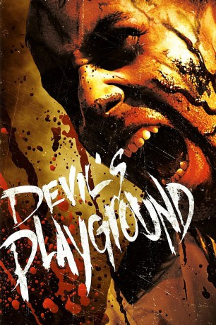

#7158 Devil's Playground
 
 IMDB-Wertung: 5.2 / 10
IMDB-Wertung: 5.2 / 10  Metascore: 0
Metascore: 0 
Ein großer Pharmakonzern plant ein neues Mittel auf den Markt zu bringen, doch irgendetwas ist schiefgegangen. Als einzige von dreißigtausend Testpersonen ist die schwangere Angela noch nicht zu einem blutrünstigen, aggressiven und pfeilschnellen Monster mutiert. Während London sich in ein tobendes Inferno verwandelt, stehen die Überlebenschancen für die junge Frau und eine kleine Gruppe Überlebender immer schlechter. Doch dann tritt Cole auf den Plan, ein raubeiniger Ex-Söldner im Auftrag des Pharmakonzerns. Angelas Immunität scheint der Schlüssel zum Fortbestand der Menschheit zu sein, doch zwischen ihr und der Hoffnung auf Rettung steht eine sich rasend vergrößernde Armee beißwütiger Irrer.
Jahr: 2010
Dauer: 96 Minuten
FSK: 18
Land: England Studio: Splendid FilmTonspuren: DTS - ,
Untertitel: Deutsch,
Auflösung: 1080p (1920x800) Größe: 5785 MB
Genre: Action, Horror
Regisseur: Mark McQueen
Drehbuch: Bart Ruspoli
Soundtrack:
Darsteller:
 Craig Fairbrass als Cole
Craig Fairbrass als Cole Danny Dyer als Joe
Danny Dyer als Joe MyAnna Buring als Angela Mills
MyAnna Buring als Angela Mills- Jaime Murray als Lavinia
- Shane Taylor als Geoffrey
- Bart Ruspoli als Matthew Mills
 Craig Conway als Steve
Craig Conway als Steve Alistair Petrie als Andy Billing
Alistair Petrie als Andy Billing Colin Salmon als Peter White
Colin Salmon als Peter White Sean Pertwee als Rob
Sean Pertwee als Rob- Michael Eaves als Mr. Morgan
- Bobby Holland als Infected Fast Man
- Sean Lerwill als Scared N-Gen Technician
- Richard Henning als Policeman
 Mo Idriss als Medical Patient
Mo Idriss als Medical Patient- Jo Martin als Scared Person on Street
- Jamie O'Rourke als The Infected
- Josh Dyer als Parkour Zombie
 Lisa McAllister als Kate
Lisa McAllister als Kate- Jack Healy als Jim
- Del Henney als Dr. Michael Brooke
- Ben Shafik als Cooper
- Nick Cavaliere als Landlord
- Steph Bramwell als Sandra
- Tim Whitnall als News Anchor
- Sally Eden als News Anchor #2
- Victoria Pritchard als TV Reporter
- Paul Corkery als John Healy
- Joe Mills als Correctional Officer
- Marny Godden als Radio News Broadcaster
- Sara Kessel als Assassinated Pregnant Woman
- Martin Butler als Assassinated Sleeping Man
- Chima Akenzua als Infected Officer in MSU Corridor
- Simon Berry als Infected MSU Man
- Tola Bishi als Infected MSU Officer
- Charlie Briggs als Infected Foyer Guard #1
- David Collom als Infected MSU Seargant
- Amanda Harrold als Infected Pregnant Girl
- Barry He als Infected Young Guy
- John Kerr als Infected One-Eyed Man
- Gary Surreal Lawrence als Infected Medical Patient in Car Park
- George Mayfield als Punk Corpse
- Craig Lee Robinson als Infected Foyer Guard #2
- Daniel Stone als Infected Passer-by
- Anoush Taheri als Infected Bald Man
- Arran Topham als Infected Policeman
- Yusuf Yirtici als Infected long haired man in car park
- Dean Forster als Infected Johnson
- Akif Mibza als Doctor
- Amy Bird als White's PA
Datei: X:\FSK18-2010\Devil's Playground (2010, FSK18, 1920x800).mkv seit 02.10.2017
Festplatte: FSK18
 Es gibt insgesamt 35 Filme in der Gruppe 'FSK18-2010'
Es gibt insgesamt 35 Filme in der Gruppe 'FSK18-2010'